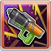

CD:8
敵方單體slow效果
敵方單體驅散1個強化效果
•消耗1片塗鴉，發動2次
CD:12
我方全體TA+100%(4T)
我方全體土屬性追擊(40%/4T)
我方全體短路效果(4T/可消除)

└攻擊-50%
└DA-100%
└TA-100%
└防禦-50%
└承受傷害+等同於敵方最大HP1%(最多3萬)
#無法再次使用
水着イルノート
基本資訊
| 定位 | 特殊 |
| 得意武器 | 銃 |
| 種族 | 人類 |
| CV | 鬼頭明里 |
立繪
上限解放前||上限解放後奧義
| Bomb the System | |
| 土屬性4.5倍傷害 •消耗1片塗鴉，追加發動1技 |
主動技能
|  CD:8 |
ピース･アウト |
| 敵方單體土屬性5倍傷害 敵方單體slow效果 敵方單體驅散1個強化效果 •消耗1片塗鴉，發動2次 |
|
CD:12 |
ロアリング･クルー |
| 我方全體消耗100%奧義值 我方全體TA+100%(4T) 我方全體土屬性追擊(40%/4T) 我方全體短路效果(4T/可消除) |
|
|
フルーレセント |
| 敵方全體螢光塗鴉效果(5T/無法回復) └攻擊-50% └DA-100% └TA-100% └防禦-50% └承受傷害+等同於敵方最大HP1%(最多3萬) #無法再次使用 |
被動技能
 |
サマープランク |
| 戰鬥開始且自己在前排時，我方全體土屬性角色奧義值+40% | |
|
ナイトプール･グラフィティ |
| 自己成為敵方攻擊目標時，獲得1片塗鴉(最多3) |